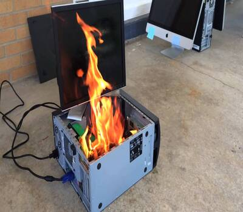

Now let me get this clear—I have been disassembling electronics since I was 4, so I think I have always been interested in computers in one way or another. This passion has carried through my life as I worked as a computer technician when I was 16 and 17.
